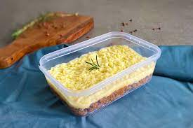

Marmita de batata doce com frango

- Peito de Frango
- Arroz
- Batata doce
Tempere os pedaços de frango e deixe marinar até o dia seguinte. Coloque no tabuleiro com batatas doces, adicione manteiga, e leve ao forno com óleo. Asse até dourar, virando os pedaços. Importante: as batatas devem ser colocadas cruas para absorverem o tempero durante o cozimento.
Marmita de escondinho de carne seca
- Mandioca
- Carne-seca dessalgada
- Lata de creme de leite
- Cebola média
- Queijo ralado
Esprema a mandioca e misture com margarina, sal, e creme de leite. Reserve. Refogue cebola, alho, e carne-seca desfiada. Adicione tomates, cozinhe e ajuste o sal. Em refratário untado, faça camadas de purê de mandioca e carne-seca. Polvilhe queijo parmesão e leve ao forno para gratinar. Delicie-se!
Strogonoff LowCarb
- Peito de Frango
- Creme de leite
- Temperos naturais de sua preferência
- molho de tomate
Doure alho e cebola na manteiga (ou azeite), adicione peito de frango picado. Em seguida, inclua temperos, sal e pimenta. Quando o frango estiver cozido, acrescente molho de tomate. Misture e adicione creme de leite. Deixe apurar e pronto! Sirva com chips de batata doce ou abobrinha.